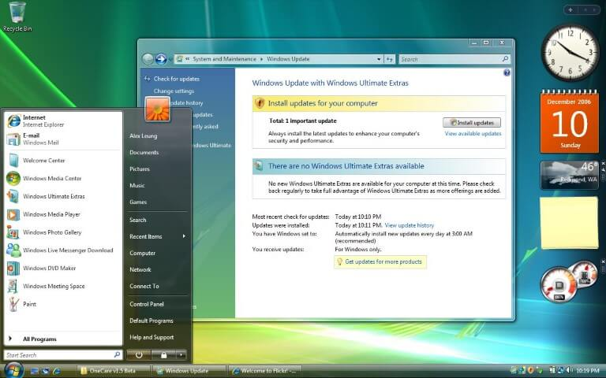

Down below, you will find various resources such as our newest YouTube videos, a brief history of the Frutiger Aero Aesthetic, our community values, other graphics, and links to charities we support.
Community Resources
Featured Videos
What is Frutiger Aero?
Asadal-Inspired Artwork (Image by
Daniele63)
{kind=link}
Frutiger Aero is what we call the popular corporate design aesthetic prevalent since approximately 2005 until its quick decline from 2012 to 2013. It's also referred to as Web 2.0 Gloss by some. You may have seen it in game console interfaces such as the PlayStation 3, the Wii, the PS Vita, PSP, Xbox 360 and others of that generation.
The term "Frutiger Aero" was coined in 2017 by Sofia Lee, it refers to the Frutiger typefaces made by Adrian Frutiger, which inspired Segoe UI used in Windows Vista, and "AERO", an acronym for "Authentic, Energetic, Reflective, and Open" which are the design guidelines for Windows Vista and Windows 7.
Prominent motifs of Frutiger Aero include:
Skeuomorphism in UI/UX design, Glossy design, Frutiger/Humanist typefaces, Tertiary color palettes, the use of glass and transparent materials, aurora borealis, bokeh photography, and macro photos of grass (Source: CARI).
A brief history lesson
We can see early traces of what would become Frutiger Aero in the early Mac OS X 10.0 released in 2001, featuring the Aqua theme, a glossy and bubbly interface. But Frutiger Aero first started to appear in interfaces around 2005 in Longhorn build 5048, which introduced the Aero theme, which would end up being used in Windows Vista and Windows 7.

Windows Vista (2007) (Image by
Alex Leung)
{kind=link}
Aurora Wallpaper (Image by
Liam / Z2r)
{kind=link}
Windows Vista released in 2007 featuring the Aero Theme, but because of underpowered hardware and multiple technical issues, it would not be very popular. The problems would later be fixed in 2009 with the release of Windows 7.
With the release of the first iPhone, Apple chose the Skeuomorphic approach for its user-interface, to provide users with familiarity. In contrast with flat design which is more simple and does not always represent real life, Skeuomorphism takes inspiration from real-life objects.
Starting from around 2006, thousands of stock photos featuring large cities surrounded by grassy hills and nature would be produced by companies such as the Korean Asadal Design and the Sozaijiten collection by Image Navi Corporation. These images are what often come to mind when we think of this aesthetic, they portrayed a utopian future where man and nature co-existed in harmony.
Frutiger Aero-style interfaces would become popular in the seventh generation of video-game consoles, and lasted until the Wii U.
{kind=link}
The decline of Frutiger Aero started in 2012 when Microsoft released Windows 8, replacing the glossy Aero theme by Metro, which featured tiles instead of the regular desktop and a more simplified and flat interface. This was made as an effort to merge their mobile and desktop environments into one, but users were not happy with the changes and it was a commercial failure.
But what would really bring it to a decline is when in 2013 Apple dumped Skeuomorphism in their newly released iOS 7, for a new interface with flatter icons, slimmer fonts, and a more minimalistic approach.
Following this, and the failure of PS Vita and Wii U, the last consoles featuring Frutiger Aero interfaces, flat design quickly took over.
Around 2022, the aesthetic regained popularity online on TikTok and other social media, and has grown in popularity ever since. Adults who were kids in the days of its prime look back at it with nostalgia, but the younger generation also started to appreciate it.
Community Values
The Frutiger Aero Community has principles that unite us and allow us to foster a welcoming and friendly environment where creativity, honesty, and a vision for a better future all come together.
Supporting Artists
Our community is dedicated to celebrating the creativity of artists, encouraging them to grow within a supportive network.
Honesty and Integrity
The Frutiger Aero Community values authenticity and integrity. We believe in building trust, strengthening the bonds within our community, and engaging with each other in ways that are fair, constructive, and truthful.
Improving Humanity and Shaping a Better Future
In our community, we strive for a shared goal: to improve humanity and to create a brighter future. We believe the power of innovation can make meaningful changes in the world, and we want to strive for a positive impact in everything we do, from small acts of kindness to large efforts to make a change.
Sustainability and Environmental Stewardship
Our commitment to environmental advocacy is a major pillar in the values of our community. We advocate for responsible consumption, resource conservation, recycling, and reducing our ecological footprint. Through planting trees, raising awareness, and encouraging eco-friendly practices, we hope to make a positive impact on the world and work towards a sustainable future for all of us.
Graphics
Here are buttons and other graphics for the Frutiger Aero Community, you can click to download them.
{kind=link}
{kind=link}
{kind=link}
{kind=link}
{kind=link}
{kind=link}
{kind=link}
{kind=link}